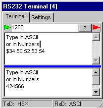
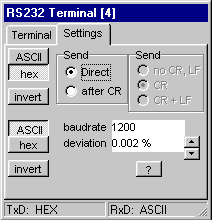
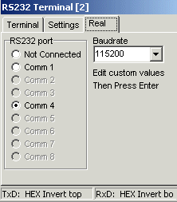

RS232 Terminal 
At the top on the right, the normal terminal window is shown. The window is sizeable.
The top of the window contains the transmission data, the bottom contains the receiving data. By the blue splitter, the space for both memos can be divided.
Both normal ASCII and numbers can be used, see below.
Any baudrate can be set and will yield for both transmission and receiving.
On receiving framing errors are detected on just 1 stopbit, and if a framing error occurs, the blue splitterbar will color Red.
Parity is not yet implemented.
Build in FIFO buffers are very large.
When ASCII is selected, normal typing on a keyboard is active.
When hex is selected, you've to type numbers, separated by spaces, representing the ascii characters. A number preceded by a dollar sign "$" is interpreted as a HEX number.
When invert is selected, the output signal is inverted (restvalue = high)
When Direct is selected, characters are send just after they are typed, else the whole line is transmitted as a burst when the ENTER key is pressed.
When no CR,LF is selected, the ENTER key doesn't transmit anything.
When CR is selected the ENTER key will transmit a CR.
When CR + LF is selected, pressing the ENTER key will transmit a CR and a LF.
The lower ASCII, hex, invert keys are for receiving and have the same meaning as for tranmission.
When the baudrate is edited, it's value will take effect, after pressing the ENTER key. Then the deviation of the baudrate is calculated on basis of the main-frequency and the deviation is shown.
By editing the deviation, you can introduce deliberatly introduce baudrate errors.
It's also possible to increase / decrease the Baudrate error by the up/down buttons on the right.
Baudrate errors both yield for transmission and receiving.
This device can be connected in parallel to a real commport.
In that way you can simulate your application even in a more realistic way.
You also could use for example hyperterminal to log the RS232 communication or to send complete files to the simulator.
Only the available (and free) comm ports will show up enabled in the figure on the right.
The dropdown list contains a list of standard baudrate values. You can enter any baudrate, by just typing the value in the combobox and pressing ENTER to activate the baudrate setting. It depends ofcourse on the possibilities of your PC which baudrates are possible.
top = TRANSMISSION
bottom = RECEIVE


